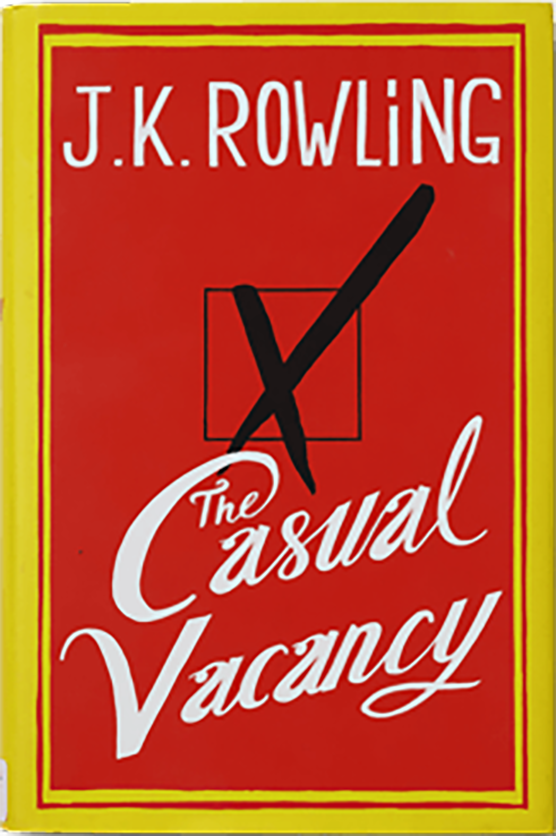

The story chronicles the cases of private detective Cormoran Strike and his assistant (later partner) Robin Ellacott. Four novels in the series have so far been published. The fourth, Lethal White, was released on 18 September 2018.[1] Rowling has stated that she has plans for at least another ten.
The Casual Vacancy. When Barry Fairbrother dies in his early forties, the town of Pagford is left in shock. Pagford is, seemingly, an English idyll, with a cobbled market square and an ancient abbey, but what lies behind the pretty façade is a town at war.